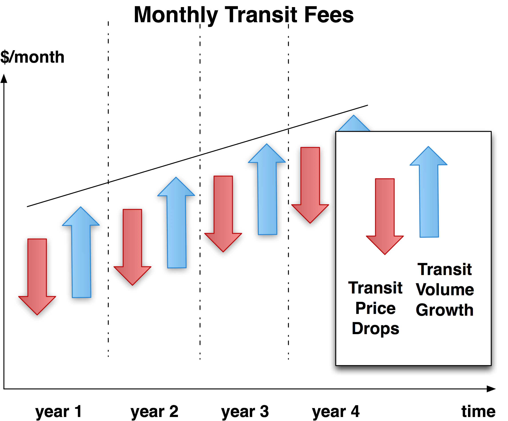
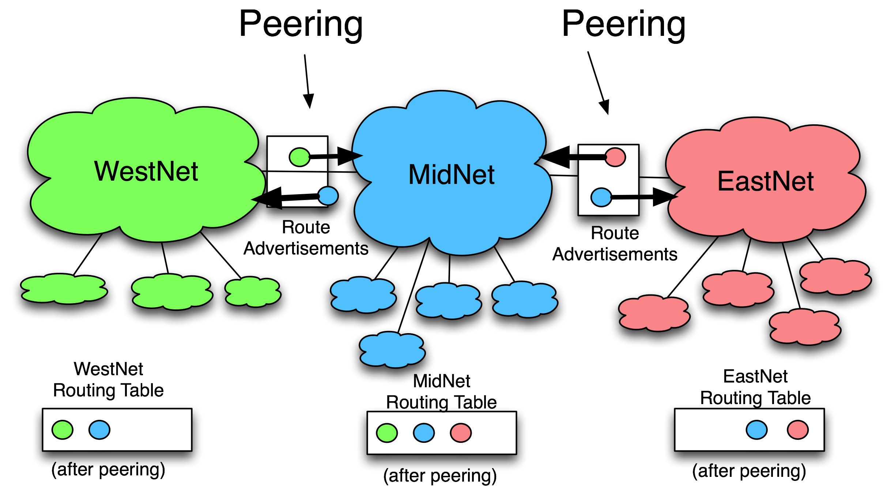
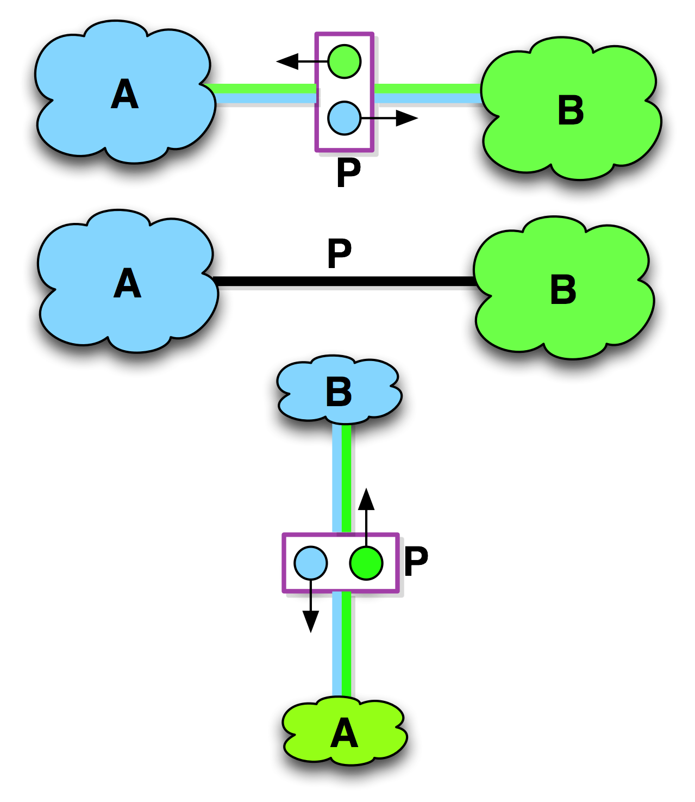

Chapter 4 - Internet Peering chapter
In this chapter we introduce the other dominant form of interconnection, called Internet Peering. Internet Peering is a local routing optimization, a way to exchange some of your traffic with another party, with neither party incurring Internet Transit fees. We describe the process of peering, introduce (a lot of) terminology, and enumerate the top five motivations ISPs give for peering. The chapter closes with a brief discussion of Paid Peering.
Introduction
Some people in the peering community see peering as like dating, finding a suitable partner where each party derives about equal value.
Internet Peering
One of the most common discussions within the peering coordinator community is
“Internet Transit is so inexpensive, why do we need anything else?”
The answer is related to transit traffic volume.
As stated earlier, as the price of Internet Transit has dropped an average of 30% per year, the average volume of Internet traffic has historically grown by 40–50% per year. This growth leads to the growth of the transit fees paid by and paid to the upstream ISPs.
For example, while the price for Internet Transit drops from $3/Mbps down to $2/Mbps, the volume of traffic during the same period might grow from 6Gbps to 10Gbps. The net result of these simultaneous forces is a 25% increase in monthly transit fees, from $16,000 per month to $20,000 per month. The percentages vary, but every year the Internet packet transmission market could grow as shown in Figure 4-1.
So even though the unit cost of transit drops, the monthly transit bill increases. Decreasing the absolute cost of Internet Transit is one of the principal drivers for pursuing an Internet Peering strategy.
Notes from the field.
Peering is Like Dating
C: I am trying to meet these people at this conference to see if they want to peer, and this feels like looking for a date.
DrP: Peering is a grudging interdependence. Both parties need to agree that it is better for them to interconnect than the next best alternative.
C: Like dating.
DrP: And then after peering is established, both parties continue to agree that the relationship is worth keeping in place, as that they both receive about equal value from the interconnection.
C: Like going steady.
DrP: Well, some peering requires a contract, like a yearly renewable marriage contract. ...Maybe the analogy is a bit stretched here. If the value is not there, the interconnection is removed, a process referred to as “de-peering.” This de-peering gives the community something to talk about... De-peering is sometimes a very public thing.
C: Does name-calling occur, ascribing of evil intent? And are there any of those uncomfortable social situations?
DrP: Sometimes. And sometimes, the peering is reestablished but with some additional conditions.
C: So peering is like dating?
DrP: Somewhat. However, unlike dating monogamy, peering monogamy would be just weird.

Figure 4-1. The unit cost of Internet bandwidth drops, but the volume increases. The result is a monthly Internet Transit bill that continues to rise.
Definition: Internet Peering is the business relationship whereby two companies reciprocally provide access to each other’s customers.
Internet Peering is typically settlement-free, meaning that neither party pays the other for access to each other’s customers, reflective of the underlying notion that peering is a relationship of approximately equal value to each party. Since both parties benefit about the same from the relationship, there is no need to bother with the overhead of measurement and settlement.
There is also no standard way to calculate and monitor the absolute value derived from a peering relationship. Is the value of the peering relationship proportional to the volume of traffic freely peered bi-directionally? Or is it proportional to the desirability or uniqueness of the routes? Or is the value the number of people reached?
For these and other reasons, the dominant form of peering is settlement-free. When you see the term “peering” from this point on, it means settlement-free peering.
To illustrate Internet Peering, consider the mini-Internet Peering Ecosystem shown in Figure 4-2 with only three ISPs: WestNet, MidNet, and EastNet.

Figure 4-2. Internet Peering provides reciprocal access to each other’s customers.
Using graphical peering notation, we see that:
- WestNet is an ISP with customers shown as clouds below it, MidNet is an ISP with its own downstream customers, and EastNet is an ISP with its own downstream customers.
- WestNet is in an Internet Peering relationship with MidNet in which WestNet learns how to reach MidNet’s customers, and MidNet reciprocally learns how to reach WestNet’s green customers.
- EastNet is in an Internet Peering relationship with MidNet in which EastNet learns how to reach MidNet’s customers, and MidNet reciprocally learns how to reach EastNet’s customers.
After these two peering sessions are established, the routing tables are in place (as graphically shown as colored circles in the “routing table” beneath the ISP clouds). This diagram shows that MidNet peers with both EastNet and WestNet, and therefore MidNet customers can reach both EastNet and WestNet customers.
It is important to observe that the routing announcements go in the opposite direction as the traffic to that destination. The Internet routing scheme separates the control plane from the data plane.
For convenience, we will use the simplified and equivalent notation shown in Figure 4-3 to indicate a settlement-free peering relationship between two parties.
These notations concisely convey that the two parties (ISP A and ISP B) are in a peering relationship.

Figure 4-3. Equivalent graphical notations for an Internet Peering relationship between ISP A and ISP B.
Three Key Points about Internet Peering
Three key points often get lost when one is first introduced to Internet Peering. It is worth reading the following points a few times:
- Internet Peering is not a transitive relationship. The fact that WestNet is peering with MidNet and MidNet is peering with EastNet does not imply that EastNet customers can reach WestNet customers. WestNet knows how to get to only its own and MidNet’s customers, and EastNet knows how to reach only its own and MidNet’s customers. The fact that they both peer with MidNet is inconsequential; peering is a nontransitive relationship.
- As such, Internet Peering is not a perfect substitute for Internet Transit. Internet Transit is a service that provides access to the global Internet, while Internet Peering simply provides a more direct path for a subset of the traffic.
- Internet Peering is typically settlement-free, with each side deriving about the same value from the reciprocal arrangement. If either party perceives that the benefit derived from peering is asymmetric, one party or the other may deny peering or suggest an alternative paid arrangement.